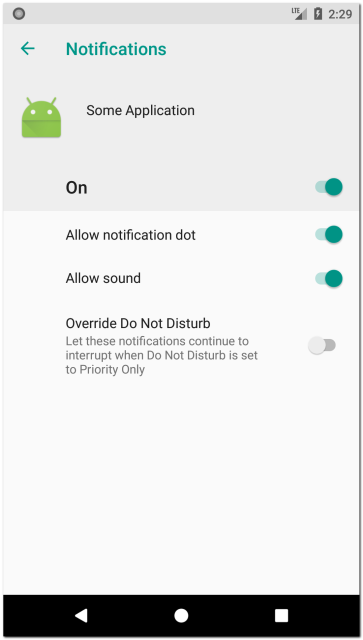
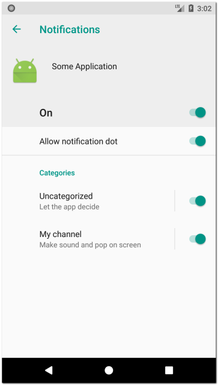
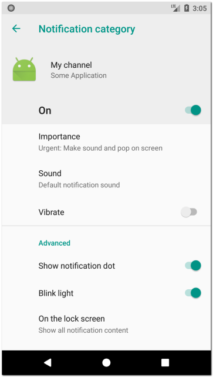
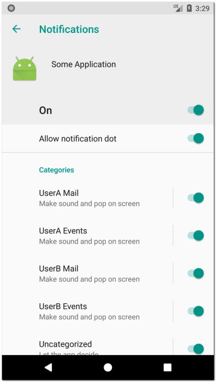
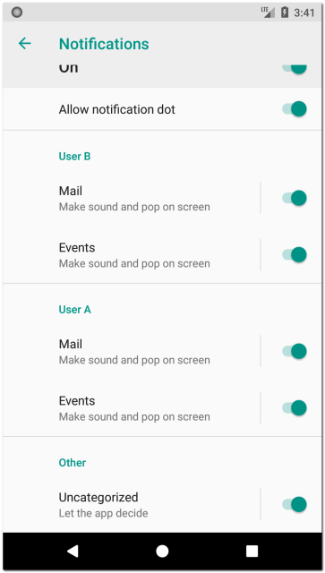
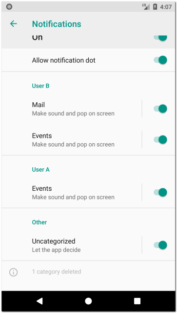

В Android Oreo (API 26) появилась возможность создавать каналы для уведомлений. В этом уроке разберемся, как это делать и зачем это нужно.
Для каждого приложения пользователь может настроить уведомления. Для этого надо зайти в настройки системы, там выбрать Apps, найти в списке и открыть нужное приложение и выбрать раздел Notifications.
По умолчанию настройки выглядят так:

Настроек немного, и они затронут все уведомления от данного приложения.
Каналы позволяют расширить эти настройки и применять их выборочно. Разработчик приложения создает канал и указывает его ID при создании уведомлений. Пользователь в системных настройках приложения видит этот канал и может настроить его: важность, звук, вибру и пр. В итоге все уведомления, которые принадлежат этому каналу, будут отображаться с этими настройками.
Т.е. создавая канал, разработчик дает пользователю возможность настроить поведение определенной группы уведомлений.
Давайте создадим канал:
NotificationManager notificationManager =
(NotificationManager) getSystemService(Context.NOTIFICATION_SERVICE);
if (android.os.Build.VERSION.SDK_INT >= android.os.Build.VERSION_CODES.O) {
NotificationChannel channel = new NotificationChannel(CHANNEL_ID, "My channel",
NotificationManager.IMPORTANCE_HIGH);
channel.setDescription("My channel description");
channel.enableLights(true);
channel.setLightColor(Color.RED);
channel.enableVibration(false);
notificationManager.createNotificationChannel(channel);
}
Каналы актуальны только для Android Oreo и выше, поэтому используется проверка версии Android. Далее я не буду включать эту проверку в примеры, чтобы не загромождать код.
В конструкторе NotificationChannel указываем ID, имя и важность. Далее указываем прочие данные и настройки. По названию методов все понятно.
Методом createNotificationChannel создаем канал.
Теперь Notifications настройки приложения выглядят так:

Появились два канала: дефолтный и наш созданный My channel. Настройки дефолтного будут использованы для уведомлений, для которых не был указан канал.
Откроем настройки My channel:

Обратите внимание, что пункт Vibrate выключен. Мы явно указали это при создании канала, используя метод enableVibration(false).
Теперь при создании уведомлений вы можете указать ID канала, и уведомления будут отображены в соответствии с настройками этого канала.
NotificationCompat.Builder builder =
new NotificationCompat.Builder(this, CHANNEL_ID)
.setSmallIcon(R.mipmap.ic_launcher)
.setContentTitle("Title")
.setContentText("Notification text");
ID канала указывается в конструкторе билдера уведомления. И теперь этот конструктор не будет зачеркнут как Deprecated, если вы используете библиотеку appCompat версии 26 и выше.
В какой момент создавать канал? Можно при старте приложения. Даже если канал уже был ранее создан, то просто ничего не произойдет. Но судя по тому, что пользователь не может удалять каналы, я думаю, можно использовать какой-нить флаг, который мы установим в true после первого создания каналов, и в дальнейшем он будет говорить нам о том, что каналы уже созданы.
Группа
Рассмотрим пример почтового приложения. Предположим, что оно умеет работать не только с почтой, но и с календарем. Т.е. оно может нам присылать уведомления двух типов: письма и события.
Соответственно, мы можем создать два канала - один для уведомлений о письмах, другой - для событий. В результате, пользователь сам сможет настроить под себя отдельно уведомления о письмах и отдельно о событиях. Это удобно.
Но наше приложение поддерживает несколько учетных записей. И под каждую учетную запись нам необходимо создавать два канала для уведомлений.
При создании 4-х каналов настройки будут выглядеть так:

Можно это улучшить, используя группы. Группа - это просто способ визуально разделить каналы в настройках.
Создается группа так:
NotificationManager notificationManager =
(NotificationManager) getSystemService(Context.NOTIFICATION_SERVICE);
notificationManager.createNotificationChannelGroup(
new NotificationChannelGroup(GROUP_ID, "Group 1"));
В конструкторе указываем ID и имя.
Далее, при создании канала используем метод setGroup, чтобы указать какой группе будет принадлежать канал.
NotificationChannel channel = new NotificationChannel(...);
// ...
channel.setGroup(GROUP_ID);
notificationManager.createNotificationChannel(channel);
Таким образом для каждой учетной записи нашего приложения мы можем создать группу, и указать ее при создании каналов уведомлений этой учетной записи:
User A (group)
Mail (channel)
Events (channel)
User B (group)
Mail (channel)
Events (channel)
Теперь настройки выглядят лучше:

Каналы сгруппированы по учетным записям.
Получение информации о канале
В любой момент после создания канала, вы можете получить информацию о нем.
NotificationChannel channel = notificationManager.getNotificationChannel(CHANNEL_ID);
Метод getNotificationChannel вернет вам объект NotificationChannel или null, если канал с указанным ID не был найден. Используя различные get-методы канала, вы сможете узнать, как пользователь настроил ваш канал. Но вы не сможете перенастроить его, set-методы просто не будут работать.
Единственное, что вы можете поменять - это имя канала и его описание (description). Для этого необходимо просто пересоздать канал с новыми параметрами и тем же ID.
Если вы считали настройки канала и по каким-то причинам решили, что пользователь не прав, то вы можете попросить его поменять настройки.
Например, если пользователь выключил отображение уведомлений для канала, открываем настройки этого канала.
NotificationChannel channel = notificationManager.getNotificationChannel(CHANNEL_ID);
if (channel.getImportance() == NotificationManager.IMPORTANCE_NONE) {
Intent intent = new Intent(Settings.ACTION_CHANNEL_NOTIFICATION_SETTINGS);
intent.putExtra(Settings.EXTRA_CHANNEL_ID, channel.getId());
intent.putExtra(Settings.EXTRA_APP_PACKAGE, getPackageName());
startActivity(intent);
}
Если getImportance равен IMPORTANCE_NONE, это значит, что канал был выключен пользователем. Создаем Intent с указанием ID канала и package приложения и запускаем Activity.
Разумеется, в реальном приложении надо действовать не так топорно, а сначала поинтересовать мнением пользователя и объяснить, почему вы хотите, чтобы он поменял настройки канала.
Удаление канала
Чтобы удалить канал, используйте метод deleteNotificationChannel
notificationManager.deleteNotificationChannel(CHANNEL_ID);
Технически вы конечно, можете использовать удаление, а затем создание канала, чтобы восстановить ваши настройки. Но так делать не рекомендуется. К тому же в настройках, в самом низу, пользователь будет видеть, сколько каналов было удалено.

И он поймет, что вы просто пересоздаете канал и сбрасываете его настройки.
Importance vs Priority
Если вы помните, при создании уведомления, мы можем в билдере указать приоритет. Начиная с Android Oreo приоритеты уведомлений были объявлены устаревшими и заменены параметром канала - важность.